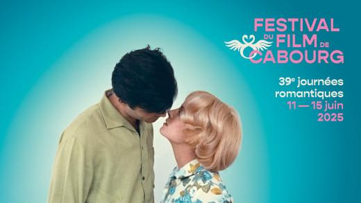
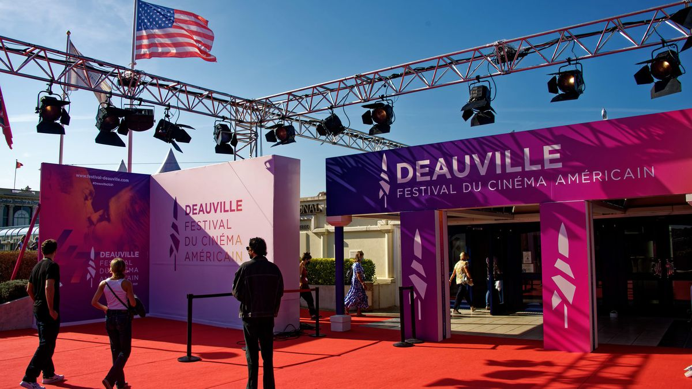
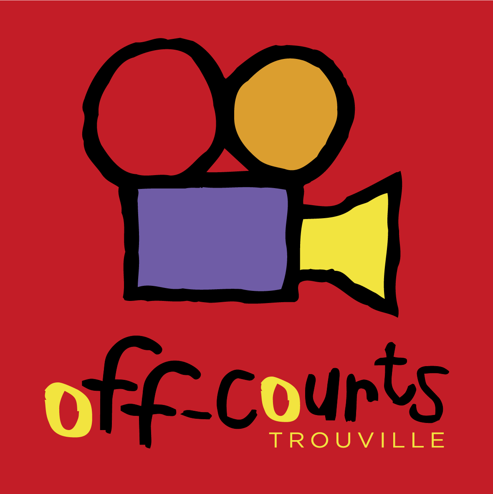

Toute l'année, la Côte Fleurie accueille des festivals et des événements culturels qui animent les différentes stations du littoral. Cinéma, musique et culture offrent de nombreuses occasions de découvrir la région autrement.


